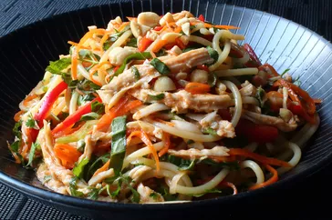

Chicken Noodle Soup

Description
Get ready to make all sorts of friends when you bring a big bowl of this
Asian chicken noodle salad to the next big cookout. The only folks you
might scare away are the ones who brought regular pasta salads. There's
just something delightfully addictive about this special combination of
cold and spicy. This recipe is the perfect catchall for all those summer
vegetables we're supposed to be eating more of, as well as any dry
leftover chicken you have around.
Ingredients
- 3 cloves garlic, crushed
- 1/2 cup seasoned rice vinegar
- 1 tablespoon soy sauce
- 1 tablespoon fish sauce
- 1 tablespoon brown sugar
- 1 tablespoon Sriracha chile sauce
- 1 tablespoon sesame oil
- 1 cooked chicken breast
- 1 (8 ounce) package spaghetti
- 1 cup grated carrots
- 1 red bell pepper, thinly sliced
- 4 green onions, thinly sliced
- 1/2 cup chopped roasted, salted peanuts
- 1/3 cup chopped fresh basil
- 1/3 cup chopped fresh mint
- 1/3 cup chopped cilantro